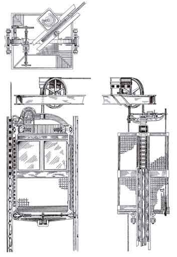

Bu projede, gökdelenlerde geleneksel halatlı sistemlerin yerine elektromanyetik kuvvetle çalışan asansörler tasarlanıyor. Böylece sürtünmesiz, sessiz ve çok daha hızlı bir taşıma sağlanabilir.
Manyetik raylar ve hareketli elektromıknatıslar kullanılarak geliştirilecek bu sistem, enerji verimliliği ve güvenlik açısından test edilmelidir. Bu proje, uzay asansörü fikirlerine de ilham verebilir.
 Ana Sayfaya Dön